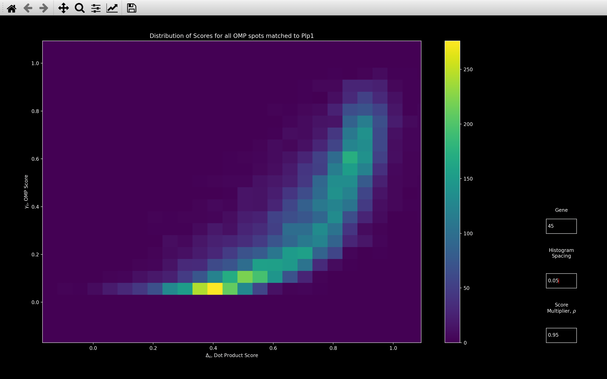

OMP
The OMP step of the pipeline runs an Orthogonal Matching Pursuit (OMP) algorithm on every
pixel, adding multiple gene bled_codes
to explain the \(n_{rounds} \times n_{channels}\) intensity vector
at each pixel. This gives us a coefficient, \(\mu_{sg}\) for every pixel, \(s\), and gene, \(g\), and thus we can
create a coefficient image for every gene.
By doing a local maxima search on these images, we can obtain another estimate of the distribution of genes, which we can compare to that obtained from the reference spots. The number and location of spots found by the OMP method will be different though.
There are some variables obtained for each spot (local_yxz, tile,
colors, gene_no and
intensity) saved in the
omp NotebookPage which are equivalent to the same variables saved
in the ref_spots NotebookPage.
There are also some other variables added to the omp NotebookPage which
relate to the typical shape of a spot in the gene coefficient images.
The OMP section takes quite a long time, so config['omp']['use_z'] can be used to only run
OMP on a subset of z-planes.
Note: config in this section, with no section specified, means config['omp']
Re-run call_spots_omp
To re-run the OMP section, the files generated during the OMP step which were saved at the paths indicated by:
nb.file_names.omp_spot_shapenb.file_names.omp_spot_infonb.file_names.omp_spot_coef
need to be deleted or re-named (alternatively the omp_spot_shape, omp_spot_info and omp_spot_coef
parameters in the file names section of the configuration file can be changed). This is
so the old data is not loaded in when the OMP part of the pipeline is run.
Other than that, the usual instructions can be followed.
Why bother with OMP?
There are two main reasons to use the OMP method for finding the distribution of genes instead of reference spots. The first is that OMP fits multiple coefficients to every pixel and thus allows for overlapping spots:
In the view_omp_fit plot, it shows an example of a spot color,
\(\pmb{\zeta}_s\), which requires the bled_code of both Plp1 and Aldoc to explain it. The
view_omp plot then shows that spots for both these genes are detected with
the OMP method. The reference spots method though, can only fit one gene
to each pixel, so here it only detects the Plp1 spot.
The second reason is that the reference spots method can only assign genes to spots
detected on the reference round / reference channel images. It is thus restricted, because there may
be genes present at pixels other than the finite amount considered. Also, the
config['find_spots']['radius_xy'] and config['find_spots']['radius_z'] parameters in the spot detection
necessitates a minimum distance between any two genes.
The OMP method says that spots are local maxima in the gene coefficient images, and thus it can find spots
at locations other than the location of the reference spots. Also, because it does a separate local maxima search
for each gene, the config['radius_xy'] and config['radius_z'] parameters in spot detection
only necessitates a minimum distance between two spots of the same gene.
The consequence of this, is that the spots detected by the OMP method tend to be in more dense clusters, as shown
by the coppafish.Viewer images below. This
is then more useful for cell typing

Initial Intensity Threshold
To produce the gene coefficient images, as shown by the view_omp_fit
function, we need to run OMP on every pixel in the image. However, for a single \(2048\times2048\times50\) tile,
there are \(2.1\times10^8\) pixels. Thus, we do an initial thresholding so as not to consider all of them.
We only consider pixel \(s\), with pixel color \(\pmb{\zeta}_s\), if it has an
intensity computed from its absolute pixel color,
\(\tilde{\chi}_s\), greater than config['initial_intensity_thresh']. I.e.
Why is absolute pixel color is used?
We use \(|\pmb{\zeta}_s|\) because we are also interested in whether a pixel has a negative gene coefficient. We
expect a negative coefficient in an annulus around a spot, as shown in the
view_omp plots, as a result of the
difference of hanning kernel used in the initial filtering. If a gene has a
negative coefficient annulus around the local maxima, then it boosts our confidence that it is legitimate.
If config['initial_intensity_thresh'] is not specified, it is
set to the percentile indicated by
config['initial_intensity_thresh_percentile'] of \(\tilde{\chi}\) computed for all
pixels in the middle z-plane (nb.call_spots.norm_shift_tile) of the central tile (nb.call_spots.norm_shift_z).
I.e., it is set to:
nb.call_spots.abs_intensity_percentile[config['initial_intensity_thresh_percentile']]
config['initial_intensity_thresh'] = 25) which
are the least intense. On other z-planes, we will get rid of more.
OMP Algorithm
For every pixel that passes the initial intensity threshold, \(s\), we run an Orthogonal Matching Pursuit (OMP) algorithm to find a coefficient, \(\mu_{sg}\), for every gene \(g\). The pseudocode for how this is done for each pixel is given below:
color: Intensity read from .npy files in tile directory for
each round and channel.
[n_rounds x n_channels]
color_norm_factor: nb.call_spots.color_norm_factor
[n_rounds x n_channels]
bled_codes: nb.call_spots.bled_codes_ge
[n_genes x n_rounds x n_channels]
background_codes: nb.call_spots.background_codes
[n_channels x n_rounds x n_channels]
1. Normalise color
color = color / color_norm_factor
2. Compute background_coefs.
Remove background from color -
for c in range(n_channels):
color = color - background_coefs[c] *
background_codes[c]
3. Initialize variables for iterating.
residual = color
added_genes = []
Append background_codes to bled_codes so has shape
[(n_genes+n_channels) x n_rounds x n_channels]
Initialize coefs with background_coefs which will not change -
coefs = zeros(n_genes+n_channels)
coefs[n_genes:] = background_coefs
i = 0
while i < n_iter:
4. Find best_gene to add based on dot product score between residual and
bled_codes.
If score < score_thresh or best_gene is background or best_gene
already added:
Stop - go to step 7.
Append best_gene to added_genes.
5. Obtain added_coefs [i+1]
for how the bled_codes of all genes in
added_genes can be combined to best explain color.
Update coefs -
for g_ind in range(i+1):
coefs[added_genes[g_ind]] = added_coefs[g_ind]
6. Update residual -
residual = color
for g in added_genes:
residual = residual - coefs[g] * bled_codes[g]
i += 1
7. return coefs
max_genes: This isn_iterin the above code.dp_thresh: This isscore_threshin the above code.
Pre-Iteration Procedure
Prior to Step 1, color is \(\pmb{\acute{\zeta}}_s\) found through
get_spot_colors
by obtaining the aligned coordinate of pixel \(s\) in each round and
channel and then reading off the corresponding intensity.
Step 1 is then just converting color from \(\pmb{\acute{\zeta}}_s\) to \(\pmb{\zeta}_s\) so the color channels
are equalised, as is done in call_reference_spots.
Step 2 is just finding a coefficient \(\mu_{sC}\) for each background gene, \(\pmb{B}_C\) as is done in
call_reference_spots. The value of \(\lambda_b\) in the \(w_{rC}\)
equation is set to nb.call_spots.background_weight_shift so the same value is used for the
reference spots and OMP methods.
After this step, color is \(\pmb{\zeta}_{s0}\) and will always remain so. I.e. once background is fit once, it
is never updated.
Step 3 is adding the artificial background genes to our actual genes. After this step, we have a set of
bled_codes, \(\pmb{b}\) such that \(\pmb{b}_{g=n_{g}+C} = \pmb{B}_C\). We also have a set of coefficients,
\(\pmb{\mu}_{s0}\) such that \(\mu_{s0g=n_g+C} = \mu_{sC}\). The set of coefficients after \(i\) actual genes have been fit
is \(\pmb{\mu}_{si}\) (\(i=0\) means just background has been fit) but \(\mu_{sig=n_g+C} = \mu_{sC} \forall i,C\)
as the background coefficients are never updated.
Finding Best Gene
Step 4 is finding the gene, \(g_i\), with the bled_code, \(b_{g_i}\) which best represents the residual after \(i\)
actual genes have been added, \(\pmb{\zeta}_{si}\).
We determine \(g_i\) to be the gene for which \(|\Delta_{sig}|\) is the largest, where \(\Delta_{sig}\) is exactly
the same dot product score used in call_reference_spots. We use
the absolute score here because negative gene coefficients also provide useful information as
explained earlier.
Dot Product Score Parameters
In the configuration file, alpha and beta are specified in both the call_spots and omp sections,
so different values of these parameters can be used for each method.
The value of \(\lambda_d\) in the \(\tilde{\zeta}_{{si}_{rc}}\)
equation is set
to nb.call_spots.dp_norm_shift * sqrt(n_rounds) so the same value is used for the
reference spots and OMP methods.
After we have found \(g_i\), we stop the algorithm if any of the following are satisfied:
- \(|\Delta_{si}| = |\Delta_{sig_i}|\) <
config['dp_thresh']. - \(g_i \geq n_g\) i.e. \(g_i\) is a background gene.
- \(g_i\) was found to be the best gene on a previous iteration.
This second condition occurred for the third gene added in the view_omp_fit example shown
earlier. This case is quite rare though, since the background genes have already been fit.
We include it because if there is an artificial gene being identified as the best one, then we are also likely to
erroneously assign actual genes to the pixel which are not actually there. But stopping the algorithm prevents
this from happening. It may be more appropriate to recompute the background coefficient, for the background gene
identified if this happens though.
The third condition is just to stop getting in a loop where we are always fitting the same gene, but it is even rarer than the second.
Finding Gene Coefficients
Once we have decided that a gene is acceptable, in Step 5 we find the coefficient of that gene as well as updating the coefficients of all genes previously fit. On iteration \(i\), there will be \(i+1\) genes to find the coefficient of. The coefficients are found through normal least squares:
Where:
- \(\tilde{\pmb{\mu}}_{si}\) is a vector of \(i+1\) values such that \(\mu_{sig_j} = \tilde{\mu}_{si_j}\) where \(\mu_{sig_j}\) is the coefficient found for gene \(g_j\) on iteration \(i\) for pixel \(s\).
- \(\pmb{G}_i\) is a matrix of shape \([n_{rounds}n_{channels} \times (i+1)]\) such that column \(j\)
is the flattened
bled_code, \(\pmb{b}_{g_j}\), for gene \(g_j\), added on iteration \(j\). - \(\pmb{\zeta}_{s0}\) is the color for pixel \(s\) after background removal flattened, so it has shape \([n_{rounds}n_{channels} \times 1]\).
Weighted Least Squares
If config['weight_coef_fit'] = True, then the coefficients are found through
weighted least squares.
In this case, both \(\pmb{\zeta}_{s0}\) and every column of \(\pmb{G}_i\) are multiplied by \(\pmb{\omega}_{si}\) where \(\pmb{\omega}^2_{si}\) is defined in the dot product score calculation.
The idea behind this is that for normal least squares, the coefficients will be
overly influenced by outliers. In the Least Squares view_omp_fit
example below, when fitting Plp1, it is so concerned about getting rid of the very intense values in channel 4
that it makes lots of channel 2 and 6 values negative.
In the Weighted Least Squares, we see that after Aldoc has been fit, the channel 4 intensity is much larger than in the Least Squares case and the channel 6 intensities are much less negative.
If we look at the Weight - Iteration 1 view_weight plot,
we see that this occurs because the contribution of the channel 4 rounds is very small.
A problem with this though, is that the weight is re-computed at each iteration which can cause the coefficient of each gene to change drastically. For example, after BG2 has been fit, we see that channel 6 has become very negative again. Looking at the Weight - Iteration 2 plot, we see that this is because the weight of round 4, channel 4 has increased.
The coefficient for Plp1 in the Weighted Least Squares case changes from 0.84 to 0.93 after BG2 has been fit but in the Least Squares case, it changes from 1.00 to 1.01.
After we have found the coefficients on iteration \(i\), we compute the residual for the next iteration in Step 6:
Where \(n_c\) is the number of channels and \(n_g\) is the number of genes. The second equation includes the combination from the background genes. In the first equation, \(\mu_{sig}\) will only be non-zero for \(i+1\) genes (in the second equation, it will be for \(i+1+n_c\) genes, because we include the \(n_c\) background genes).
We continue iterating between Step 4 and Step 6 until any of the stopping criteria are met,
or we fit config['max_genes'] to the pixel.
Weighting in Dot Product Score
The difference between this algorithm and the standard Orthogonal Matching Pursuit algorithm is the weight factor, \(\pmb{\omega}^2_{si}\), used when computing \(\Delta_{sig}\). Normal OMP would have \(\alpha = 0\) so \(\pmb{\omega}^2_{si}=1\).
By using this weighting, we are trying to say that if a gene has already been fit with high intensity in round \(r\), channel \(c\), then the remaining intensity in round \(r\), channel \(c\), after it has been fit is probably because the coefficient of that gene was not fit correctly, rather than because another gene is present. As the example below shows, without it, genes are fit to really try and get rid of any anomalously intense rounds/channels even if a gene has already been fit there.
If we compare the view_omp_fit plots, we see that
in the \(\alpha=0\) case, Rgs4 has been fit to explain the anomalously negative round 6, channel 5
and Aldoc has been fit to explain the anomalously positive round 2, channel 1.
The view_weight image shows the calculation of the weight
factor for \(i=4\) (all 4 of the actual genes shown have been added). This shows that round 2, channel 1 has a low
weighting because Lhx6 has already been fit and this gene has high intensity in round 2, channel 1.
If we look the view_score image, we see that in the top right, with \(\alpha=0\), we
get a large score for Aldoc solely because of the contribution from round 2, channel 1.
If we look at the bottom right though, we see that with \(\alpha=120\), the score for Aldoc is very small, as we
would expect it should be, when comparing the 2 plots in the second column of the view_score image.
Basically, we need the weighting because we know that the least squares coefficient fitting will produce some anomalously intense rounds and channels. When selecting the best gene, we need to be robust to this.
Finding Spots
 After we have run the OMP algorithm on every pixel of a tile, we can
produce an image for each gene
based on the \(n_{pixels}\times n_{genes}\) array of coefficients, \(\pmb{\mu}\).
After we have run the OMP algorithm on every pixel of a tile, we can
produce an image for each gene
based on the \(n_{pixels}\times n_{genes}\) array of coefficients, \(\pmb{\mu}\).
A \(200\times 200\) pixel section of such an image for three genes is shown on the right. Clearly, most values in each image are zero because each pixel only has a non-zero coefficient for a very small fraction of genes.
We then take each gene in turn and find spots,
which are the local maxima in the coefficient image. These local maxima are
found in exactly the same way
as in the find spots part of the pipeline. But here,
the threshold intensity is 0 and the neighbourhood (kernel for dilation) is defined by the parameters
config['radius_xy'] and config['radius_z'].
Spot Shape
In the gene coefficient images above, the spots can clearly be seen as red (positive) circles surrounded by a blue (negative) annulus. So to decide whether a particular spot is legitimate, we want to compare its shape to the average spot shape.
This average spot shape can be specified in advance (e.g. if you have already run an experiment, which is expected
to be similar to the current one, and you want the same shape to be used) with a npy file in the output directory
with the name given by config['file_names']['omp_spot_shape']. This file must contain an image (axis in
the order z-y-x) indicating the expected sign of a coefficient (only values are 1, 0, -1)
in the neighbourhood of a spot.
If the file indicated by config['file_names']['omp_spot_shape'] does not exist, then it will be
computed
from the spots found on a specific tile. The tile used is the one for which the most spots were found with the
reference spots method, and it is saved as nb.omp.shape_tile.
The psuedocode for obtaining the spot shape is given below:
spot_yxz: yxz coordinates of all spots found on the tile
[n_spots x 3]
gene_no: gene_no[s] is the gene whose coefficient image
spot s was found on.
[n_spots].
tile_sz: nb.basic_info.tile_sz
nz: nb.basic_info.nz
gene_coef_im: gene_coef_im[g] is the gene coefficient image
for gene g, which can be made after running OMP on each pixel.
[n_genes x tile_sz x tile_sz x nz]
for s in range(n_spots):
1. use = True if number of pixels neighbouring
spot_yxz[s] in gene_coef_im[gene_no[s]]
with a positive value equals use_thresh.
2. If use, then obtain the [shape_ny x shape_nx x shape_nz] image
centered on spot_yxz[s] in gene_coef_im[gene_no[s]].
3. We now have spot_images which is a
[n_use x shape_ny x shape_nx x shape_nz] array.
We update this by only keeping images from isolated spots.
[n_use2 x shape_ny x shape_nx x shape_nz]
4. Compute spot_sign_images by taking the sign of every value in spot_images
so the only values are 1, 0, -1.
Next, we compute av_spot_sign_image which is the average of
spot_sign_images across spots.
Where abs(av_spot_sign_image) < sign_thresh, set it to 0.
Take sign of av_spot_sign_image so it only contains 1, 0, -1.
[shape_ny x shape_nx x shape_nz]
shape_pos_neighbour_thresh: In 2D, this isuse_threshin the above code. In 3D, this isuse_thresh - 2.shape_max_size: This is[shape_ny, shape_nx, shape_nz]in the above code.shape_sign_thresh: This issign_threshin the above code.
Step 1 is a thresholding procedure, so we only use spots we are quite confident are real for computing
the average shape.
For a spot to be used in computing the shape, on the z-plane of the gene coefficient image that it was found on,
within the \(n_{pos_{use}}\times n_{pos_{use}}\) neighbourhood with the local maxima in the centre, all
n_use =\(n_{pos_{use}}^2\) coefficients must be positive. In 3D, the coefficient at the same \(yx\) coordinate
as the local maxima but on 1 z-plane either side must be also positive (now require n_use =\(n_{pos_{use}}^2 + 2\)
positive coefficients in the neighbourhood of the spot). The value of \(n_{pos_{use}}^2\) is given by
config['shape_pos_neighbour_thresh'], the default value is 9 meaning all pixels in a \(3\times 3\) grid centered on
the local maxima must be positive.
Example
The first image below shows a spot that would be used to compute the shape with
config['shape_pos_neighbour_thresh'] = 3because all 9 pixels in the central z-plane have
a positive coefficient, as do those on 1 z plane either side but in the middle yx pixel.
The second image shows a spot that would not be used.
In Step 2, we just get the cropped gene coefficient image in the neighbourhood of the local maxima. 3 examples are shown as Spot 1, Spot 2 and Spot 3 below.
In Step 3, we are saying that most spots are probably not overlapping with any other genes so
to get an estimate of what an average spot looks like, let us only use spots which are
quite well isolated. Our definition of isolated here, is that the distance between each spot used in Step 2
and any other spot used in Step 2 must exceed config[shape_isolation_dist].
In Step 4, we first take the sign of the spot images and then compute the average of these using
get_average_spot_image.
We set av_type = 'mean' and symmetry = 'annulus_3d'. We use this symmetry because we assume that the
spot should be circular within a z-plane and symmetric in z. This procedure produces the Average Sign image
shown above. This is saved to the Notebook as nb.omp.spot_shape_float.
After we have this av_sign_image, we get our final spot_shape via:
import numpy as np
av_sign_image[np.abs(av_sign_image)] < config['omp']['shape_sign_thresh']] = 0
spot_shape = np.sign(av_sign_image)
This is just saying that if the absolute value of the mean sign across all these spots was less than
config['omp']['shape_sign_thresh'], then we are not sure what sign these pixels
should be, so we won't assign them a sign in our final spot_shape. Otherwise,
we are fairly confident what sign they should be, so we do assign the sign to our final shape. The Spot Shape
image above shows what this looks like.
Why does the spot shape indicate the expected sign of the coefficient?
The spot_shape indicates the expected sign of a coefficient, not the expected value.
This is because, through the OMP algorithm, for a pixel to have a non-zero coefficient
for any gene, it has already gone through a thresholding procedure which has decided that
the gene bled_code is required to explain the pixel color.
The idea behind counting the number of coefficients with the correct sign is that if there are lots of pixels in the neighbourhood of the spot which required a certain gene, then that gives us confidence that the gene is actually present.
If we instead convolved the actual coefficent image (e.g. Spot 1 image shown above) with the expected coefficient kernel (e.g. mean of spot_images in Step 4 of the pseudocode), it would boost the score of intense pixels which we don't want to do.
The final spot_shape is saved to the Notebook as nb.omp.spot_shape and is also saved as a
npy file in the output directory with the name indicated by config['file_names']['omp_spot_shape'].
The coordinates and corresponding gene of spots used to compute nb.omp.spot_shape are saved as
nb.shape_spot_local_yxz and nb.shape_spot_gene_no respectively.
Error - No negative values in nb.omp.spot_shape
If config['shape_sign_thresh'] is too large, nb.omp.spot_shape will not have any -1 values.
This will then raise an error because nb.omp_n_neighbours_neg cannot be computed.
To get past this error, the OMP step needs to be re-run with either
config['shape_sign_thresh'] set to a lower value or
nb.omp.spot_shape specified through config['file_names']['omp_spot_shape'].
Example
The following error was hit when running with config['shape_sign_thresh'] = 0.7:
The error saves the spot shape, nb.omp.spot_shape_float, which is converted to nb.omp.spot_shape through
thresholding with config['shape_sign_thresh'] and then taking the sign.
If we then load this file, we can get an idea of a suitable value of config['shape_sign_thresh']:
import numpy as np
import napari
im_file = "/Users/joshduffield/Documents/UCL/ISS/Python/play/B8S5_Slice001_npy/omp_spot_shape_float_ERROR.npy"
im = np.load(im_file)
napari.view_image(im, contrast_limits=[-1, 1], colormap="PiYG")
Say we decide after looking at the image in napari, that we want values more negative than
at the blue cross to be included in the final shape. Then we set config['shape_sign_thresh']
to be just below the absolute value at this cross (0.336 as indicated in bottom left).
The value of config['shape_sign_thresh'] indicated in the error is the maximum allowed value
such that nb.omp.spot_shape will contain at least one pixel with the value of -1.
If the saved nb.omp.spot_shape_float image has no negative values, then config['file_names']['omp_spot_shape']
must be used to specify nb.omp.spot_shape. The saved image can still be used as a guide
as to where nb.omp.spot_shape=1 though.
n_neighbours
Once we have found the spot_shape, we want to quantify how much each spot resembles it. To do this,
if spot \(s\), was found on the gene \(g\) coefficient image, we first
obtain coef_im_s which is the gene
\(g\) coefficient image centered on the coordinates of spot \(s\), with the same size as spot_shape.
We then count the number of pixels for which
coef_im_s and spot_shape both have positive coefficients. We also count the number of pixels for which
coef_im_s and spot_shape both have negative coefficients. Once this has been done for all spots, these
are saved as nb.omp.n_neighbours_pos and nb.omp.n_neighbours_neg respectively.
To reduce the memory of the Notebook file, we only save spots to the Notebook if n_neighbours_pos
exceeds config['initial_pos_neighbour_thresh']. If this is left blank, it will be set
to the fraction config['initial_pos_neighbour_thresh_param'] of the maximum possible value (i.e.
sum(spot_shape>0)). It will also be clipped between config['initial_pos_neighbour_thresh_min'] and
config['initial_pos_neighbour_thresh_max'].
view_omp_score
The way nb.omp.n_neighbours_pos and nb.omp.n_neighbours_neg are obtained, can be visualised for a specific
spot with the function view_omp_score:
Here, the top plot shows nb.omp.spot_shape and the bottom plot shows the coefficient image for Snca in the
neighbourhood of spot \(371046\) which has \(yxz\) coordinates in the global coordinate system of
\([3970, 509, 25]\).
The green hatching in the top plot indicates where both plots have the same sign. So nb.omp.n_neighbours_pos[371046]
is the number of red pixels with green hatching (316) and nb.omp.n_neighbours_neg[371046] is the number of
blue pixels with green hatching (192).
OMP Score
The final score, \(\gamma\), used for
thresholding
OMP spots in coppafish.Viewer and when exporting to
pciSeq is:
Where:
- \(n_{neg_s}\) is
nb.omp.n_neighbours_neg[s] - \(n_{neg_s}\) is
nb.omp.n_neighbours_pos[s] - \(n_{neg_{max}}\) is
sum(nb.omp.spot_shape<0) - \(n_{pos_{max}}\) is
sum(nb.omp.spot_shape>0) - \(\rho\) is
config['thresholds']['score_omp_multiplier']
So if \(\rho = 1\), this would just be the fraction of pixels in the neighbourhood of spot \(s\) with the correct sign. The larger \(\rho\), the greater the contribution of the positive pixels to \(\gamma_s\).
With the view_omp_score function, the effect of varying \(\rho\) on the score, can
be seen by using the textbox. The top row of plots are also normalised so \(\gamma_s\) is equal to the sum
of the absolute value of the pixels with the green hatching. I.e. in the \(\rho=0.1\) image, the negative pixels
are much larger than the positive and in the \(\rho=20\) image, the positive pixels are much larger than the negative.
Saving OMP results
Because the OMP section of the pipeline takes a long time, we want to save the results as we go along, so we don't have to restart the whole thing if it crashes for some reason e.g. a memory error.
Thus, after we have found the spots on a tile, we save the information for all of them in a npy file
in the output directory with a name indicated by config['file_names']['omp_spot_info']. For each spot, \(s\),
this file contains 7 integer values. The first 3 are the local \(yxz\) coordinates (z-coordinate in units of z-pixels) on
the tile it was found on. The fourth is the gene it was assigned to. The fifth is n_neighbours_pos and the sixth
is n_neighbours_neg. The seventh is the tile it was found on.
We also save the coefficients of each spot \(s\) for each gene, \(\pmb{\mu}_s\),
found via the OMP algorithm. This \(n_{spots}\times n_{genes}\) sparse array is saved as a
npz file in the output directory with a name indicated by config['file_names']['omp_spot_coef']. This
is not actually used anymore but may be useful for debugging purposes.
If these files already exist, the call_spots_omp function will simply skip over all tiles
for which spots have been saved and then load them all in after spots have been found on all the other tiles.
After spots have been found on all tiles, duplicate spots are removed in the same way as in the get reference spots step of the pipeline.
We then save details of each spot to the OMP NotebookPage i.e. local_yxz, tile,
colors, gene_no,
intensity, n_neighbours_neg and
n_neighbours_pos.
Diagnostics
As well as view_omp_score, there are a few other functions using matplotlib which may help to
debug this section of the pipeline.
The view_codes, view_spot
and view_intensity
functions can also be used for OMP spots if the argument method has the value 'omp' when calling them.
histogram_score
When histogram_score is run with method = 'omp', the histogram
of the OMP score, \(\gamma_s\), will be plotted:
The Score Multiplier textbox can then be used to see how the value of \(\rho\) affects the distribution.
There is also the option to show the 5 histograms available when
histogram_score is run with method = 'anchor'.
These show the distribution of the dot product score, \(\Delta_{s0g_s}\), of each spot, \(s\), with gene
\(g_s=\) nb.omp.gene_no[s], if gene \(g_s\) was added on the first iteration.
I.e. this is the score the spot would have had if it was a reference spot instead of an OMP spot.
Clearly, we see that \(\Delta_{s0g_s}\) tends to be larger than \(\gamma_s\).
histogram_2d_score
The histogram_2d_score function shows the bivariate histogram to
see the correlation between the omp spot score, \(\gamma_s\) and the dot product score, \(\Delta_{s0g_s}\)
(between the orange \(\gamma_s\) and cyan Dot Product Score line in the above plot):

Like with the histogram_score plot, you can use the textboxes
to change the bin spacing, see how \(\rho\) affects the distribution (compare first and second plots to see how
a larger \(\rho\) creates two clusters of spots, one at \(\Delta=0.4, \gamma=0.1\) and one at \(\Delta=0.9, \gamma=0.8\))
and see the distribution of a single gene (see Plp1 image above).
gene_counts
If the gene_counts function is run and the Notebook contains the
OMP page, then the number of OMP spots with \(\gamma_s >\) omp_score_thresh and
nb.omp.intensity > intensity_thresh assigned to each gene will also be shown:
The default omp_score_thresh, omp_score_multiplier and intensity_thresh
are config['thresholds']['score_omp'], config['thresholds']['score_omp_multiplier'] and
config['thresholds']['intensity'] respectively.
Clearly, when all the score thresholds are set to 0, there are many more OMP spots because we can detect multiple spots at the same location if they belong to different genes.
The Fake Genes plot has nothing to do with the OMP spots.
view_omp
This function is useful for seeing all gene coefficients fit in the neighbourhood of a spot.
view_omp_fit
This function is useful for seeing how the OMP algorithm proceeded on the single pixel at the location of the spot.
If you right-click on a column, it will run the view_score function to indicate how
the dot product was calculated for that gene at that iteration. For example, right cicking
the third column in the view_omp_fit image below, produces the view_omp_score image indicating how
the dot product score for Trp53i11 was calculated on iteration 1.
view_score
The view_score is the same as described for reference spots method.
However, for the OMP method, \(\Delta_s\) is computed for each gene on each iteration. The calculation
of all these different \(\Delta_s\) values can be viewed by changing the gene/iteration in the textboxes.
For example, the view_score image above shows the calculation for Trp53i11 on iteration 1, but if you wanted
to know why Pde1a was not fit on iteration 1, you can type in Pde1a or 42 in the Gene textbox:
To get back to the best gene on any iteration, just type in any invalid number/letter into the Gene textbox.
After iteration 0, once actual genes have been fit, the role of the weighting becomes
much more important. If the Weight Squared plot is clicked on,
it will run the view_weight function for the current iteration, as shown in the view_weight
image above.
view_weight
The view_weight function produces a plot to indicate how the weight squared value for spot \(s\),
\(\pmb{\omega}^2_{si}\), is calculated
from the genes fit prior to iteration \(i\).
The view_weight image above shows how the background and Snca gene combine to produce
\(\pmb{\omega}^2_{si}\) on iteration 1. Clearly, the rounds/channels where Snca is strong have an
extremely low weight, as does channel 0 where the strongest background has been fit.
The \(\alpha\) and \(\beta\) textboxes can be used to see how these parameters affect the final weighting. The iteration textbox can be used to see how the weighting and gene coefficients (\(\mu\) values in titles of bottom row plots) change once more or less genes have been added.
If the Background plot is clicked on, it will run the view_background function, as shown
in the view_background image above.
view_background
The background calculation and view_background function are exactly the same as
described for reference spots method.
Psuedocode
This is the pseudocode outlining the basics of this step of the pipeline.
There is more detailed pseudocode about how OMP was run on each pixel and how the
spot_shape was found.
color_norm_factor: nb.call_spots.color_norm_factor
[n_rounds x n_channels]
t_most_spots: tile with most spots found on it
in the call_reference_spots function.
tile_sz: nb.basic_info.tile_sz
nz: nb.basic_info.nz
Alter use_tiles so t_most_spots will be the first tile.
for t in use_tiles:
for z in use_z:
Load in pixel_colors of all pixels on tile t, z-plane z.
[n_pixels_z x n_rounds x n_channels]
Normalise pixel_colors
pixel_colors = pixel_colors / color_norm_factor
Compute pixel_intensity from abs(pixel_colors)
[n_pixels_z]
Only keep pixels with intensity above threshold
pixel_colors = pixel_colors[pixel_intensity >
initial_intensity_thresh
[n_keep x n_rounds x n_channels]
for s in range(n_keep):
Remove background from pixel_colors[s]
Run OMP algorithm to obtain coefficient of each gene.
Save coefficient for spot s, gene g as pixel_coefs_z[s, g]
[n_keep x n_genes]
Concatenate all pixel_coefs_z arrays into one big pixel_coefs array
containing all pixels across all z-planes.
[n_pixels x n_genes]
If t == use_tiles[0]:
Compute spot_shape from pixel_coefs on first tile if not provided.
Save spot_shape to output directory.
for g in range(n_genes):
Convert pixel_coefs[:, g] into coef_image
[tile_sz x tile_sz x nz]
Find yxz coordinates of local maxima in coef_image
[n_spots_g x 3]
Using spot_shape, find n_neighbours_pos
[n_spots_g]
Using spot_shape, find n_neighbours_neg
[n_spots_g]
Combine spots on all genes to create
spot_info_t [n_spots_t x 7]
Where:
spot_info_t[s, :3] are the yxz coordinates of spot s.
spot_info_t[s, 3] is the gene assigned to spot s.
spot_info_t[s, 4] is n_neighbours_pos for spot s.
spot_info_t[s, 5] is n_neighbours_neg for spot s.
spot_info_t[:, 6] = t
Threshold based on n_neighbours_pos so only keep spots for which
n_neighbours_pos > n_pos_thresh:
spot_info_t = spot_info_t[spot_info_t[s, 4]>n_pos_thresh, :]
[n_save_t x 7]
Save spot_info_t to output directory
Load in spot_info_t from all tiles and combine into large spot_info array
[n_spots x 7]
Remove duplicate spots from spot_info
[n_non_duplicate x 7]
Load in spot_colors corresponding to the spots with yxz coordinates given
by spot_info[:, :3]
[n_non_duplicate x n_rounds x n_channels]
Save spot_info to Notebook:
nb.omp.local_yxz = spot_info[:, :3]
nb.omp.gene_no = spot_info[:, 3]
nb.omp.n_neighbours_pos = spot_info[:, 4]
nb.omp.n_neighbours_neg = spot_info[:, 5]
nb.omp.tile = spot_info[:, 6]
nb.omp.colors = spot_colors